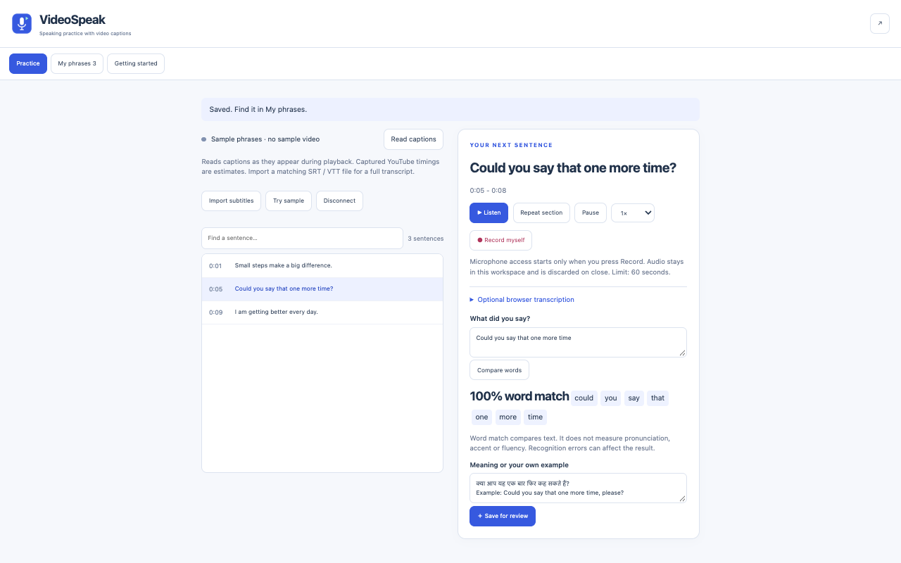
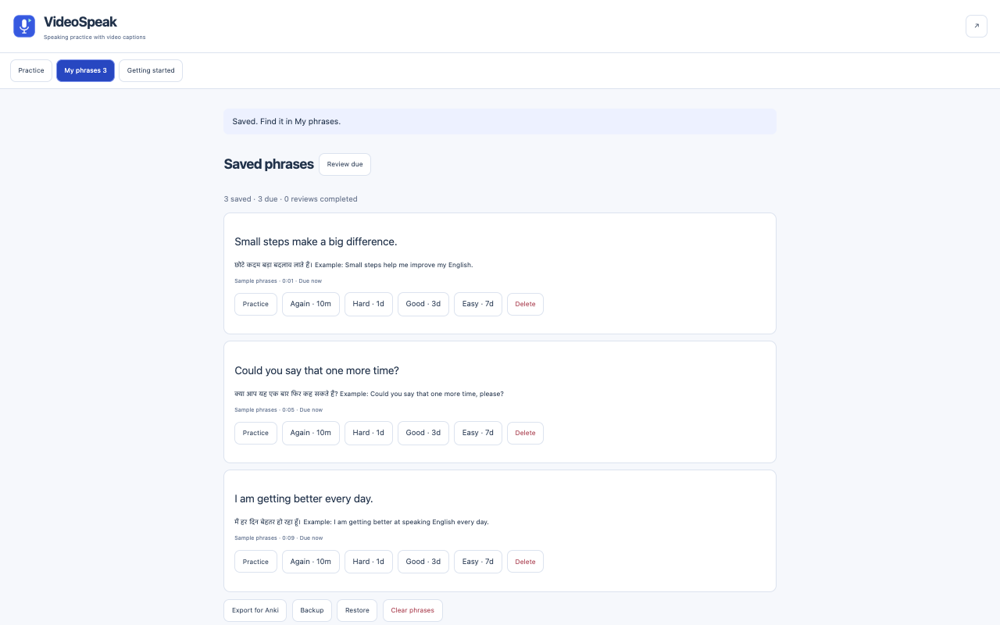

Practice with captions
Read visible YouTube captions or active HTML5 subtitle tracks. Import matching SRT or WebVTT subtitles for a full timed transcript.
Chrome extension · Version 0.1.1
Choose one sentence from a video, listen to it, say it aloud and record yourself. Keep useful phrases with your own translation or example, then return to them for review.
Read visible YouTube captions or active HTML5 subtitle tracks. Import matching SRT or WebVTT subtitles for a full timed transcript.
Replay or loop a section, adjust playback speed and record up to 60 seconds. Listen to your recording or download it.
Type what you said or choose optional browser transcription. See matching, missing and extra words. This compares text, not pronunciation or fluency.
Save up to 500 phrases with your notes. Choose fixed review intervals and export four fields for Anki or a JSON backup.


No. Write your own translation or example in the note field. The English-Hindi screenshots show user-entered notes, not automatic translation or a Hindi interface.
No. Word match compares the original sentence with typed or transcribed text. It does not assess accent, pronunciation or fluency.
Capture collects captions as they appear during playback, up to 300 captions, with estimated timing. Import matching SRT/VTT files for up to 5,000 timed cues.
Netflix support is not verified. Embedded or protected players may not expose captions. Timed replay requires a finite video duration; live streams may not support it.
Local recording remains in memory until you close the workspace, unless you download it. Optional browser transcription requires consent and may send audio to the browser speech-service provider. VideoSpeak has no developer server.
Install VideoSpeak from the Chrome Web Store. No account is required for the extension itself.
Saved phrases stay in your Chrome profile. Audio is excluded from backups. Clear phrases deletes the library; downloaded files must be deleted separately. Browser transcription is optional and requires explicit consent.
Read the full privacy policyVersion 0.1.1 has automated core, interface and controlled-video checks. Live YouTube/Netflix, physical microphone quality and remote transcription remain unverified.
For support, describe the steps and your Chrome version. Do not post private records, tokens or recordings in public issues.